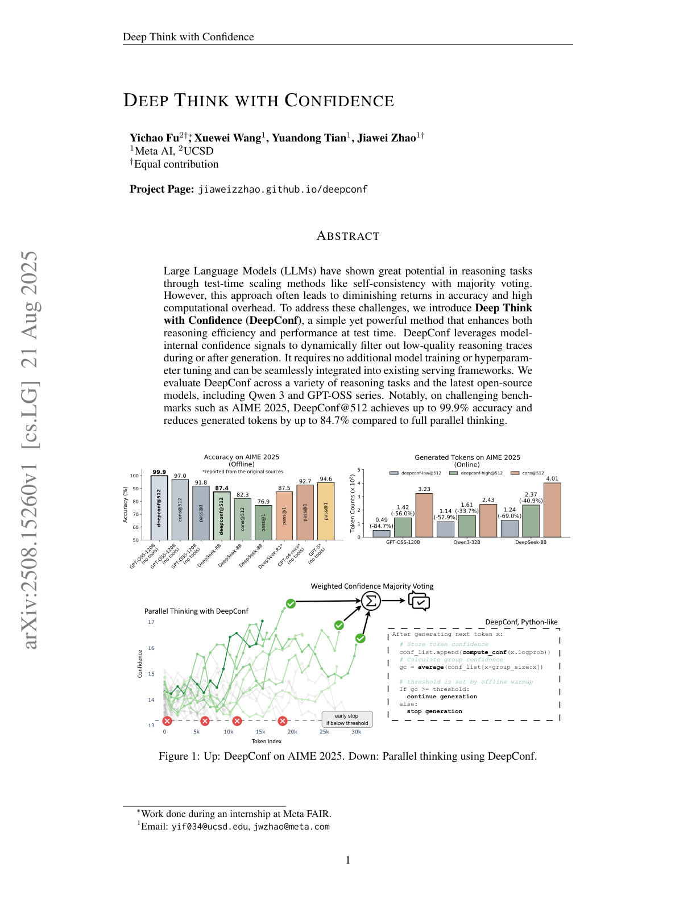
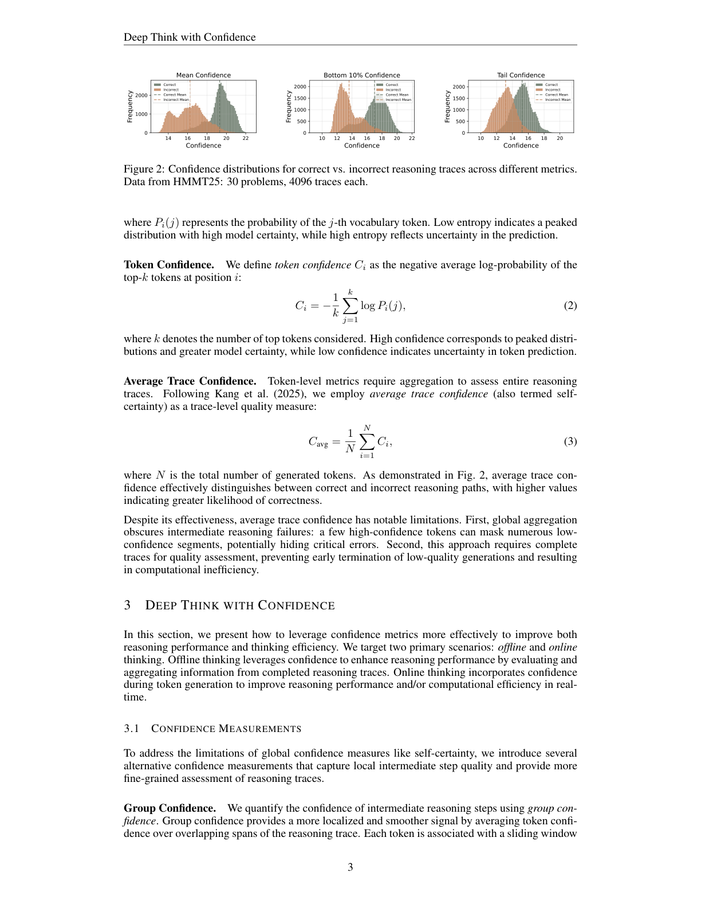
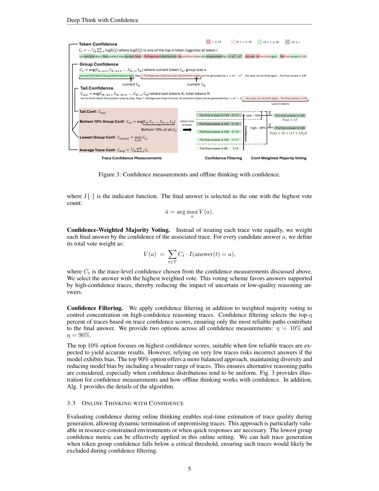
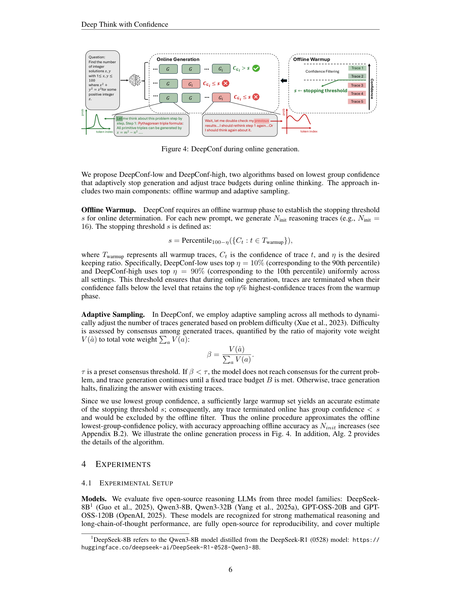
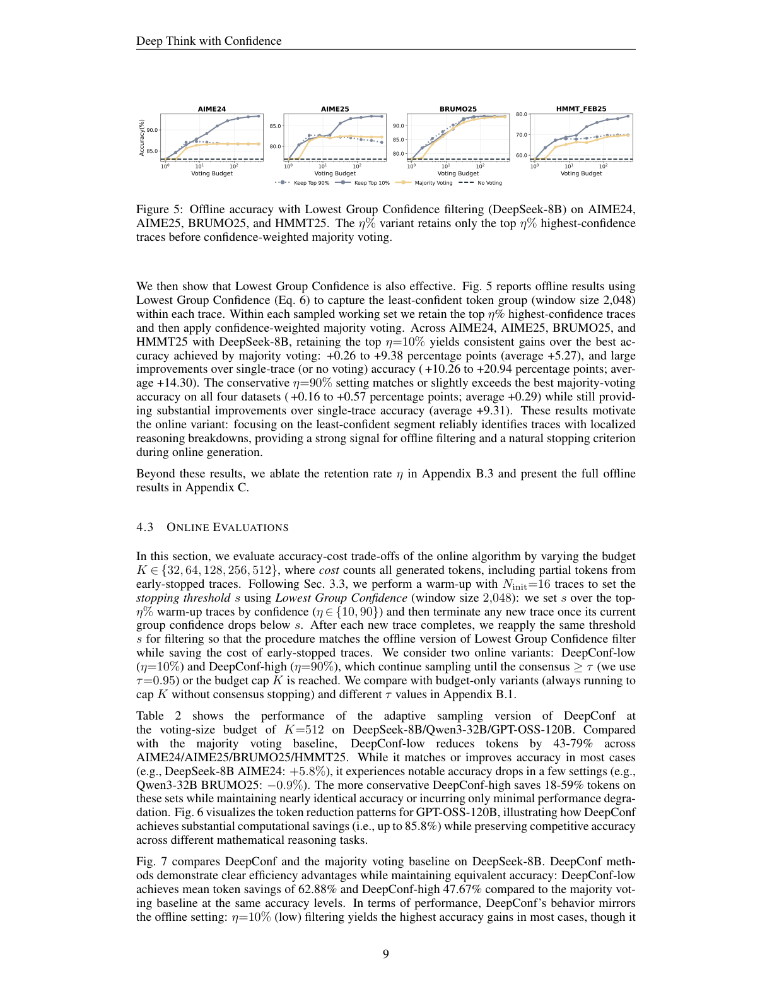
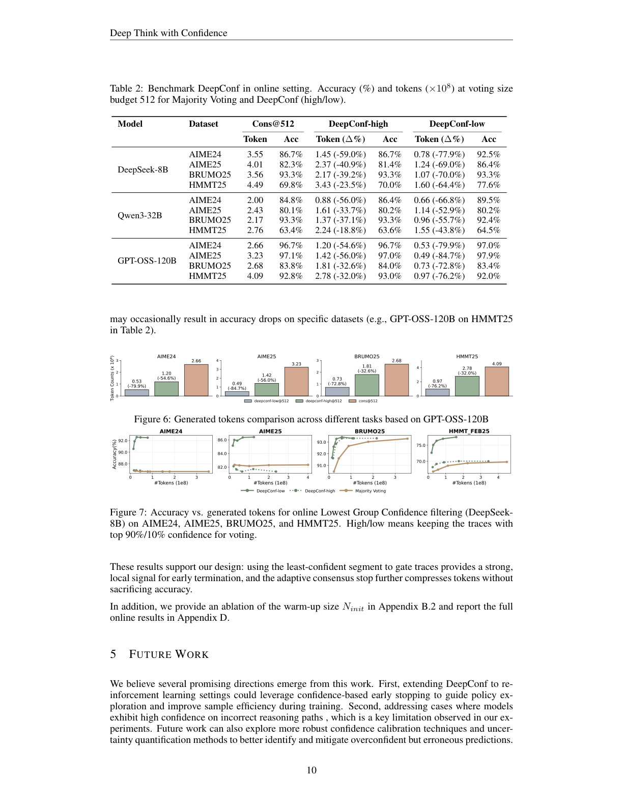

利用模型内部置信度信号在生成时/生成后动态过滤低质量推理轨迹，无需额外训练或调参，在测试时同时提升效率与精度
大语言模型（LLM）通过自一致性多数投票等测试时缩放方法在推理任务上展现出巨大潜力，但该方法常导致准确率收益递减且计算开销高昂。为此，我们提出 DeepConf（带置信度的深度思考）——一种简单而强大的方法，在测试时同时提升推理效率与性能。DeepConf 利用模型内部置信度信号，在生成时或生成后动态过滤低质量推理轨迹；它无需额外模型训练或超参调优，可无缝集成进现有服务框架。我们在多种推理任务与最新开源模型（含 Qwen3、GPT-OSS 系列）上评估。值得注意的是，在 AIME 2025 等困难基准上，DeepConf@512 达到最高 99.9% 准确率，且相较完整并行思考减少多达 84.7% 的生成 token。
自一致性（self-consistency）采样多条推理路径并以多数投票聚合，显著提升推理准确率，但推理开销随每条查询生成的推理轨迹数线性增长，限制实际部署——例如用 Qwen3-8B 在标准多数投票上将 AIME 2025 的 pass@1 从 68% 提升至 82%，每题需额外 511 条轨迹、消耗 1 亿 token。此外，并行思考存在收益递减：性能常随轨迹数增加而饱和或下降；标准多数投票对所有轨迹一视同仁，忽略质量差异，当低质量轨迹主导投票时导致次优。
近期工作利用 next-token 分布统计评估轨迹质量（高置信度对应低熵、低不确定性），通过聚合熵/置信度等 token 级统计量计算全局置信度以过滤低质量轨迹。但全局置信度有两大局限：(1) 掩盖局部推理步的置信度波动，可能隐藏特定中间步的关键推理断裂；(2) 需先生成完整轨迹才能计算，无法对低质量轨迹早停。
我们提出 DeepConf——一种结合并行思考与置信度感知过滤的简单而有效的测试时方法，基于局部置信度测量，在离线（生成后）与在线（生成时）两种模式下识别并丢弃低置信度轨迹，在保持或提升精度的同时减少不必要的 token 生成。在 AIME 2025 上，离线 DeepConf@512（GPT-OSS-120B，无工具）达 99.9%，饱和该基准（cons@512 为 97.0%、pass@1 为 91.8%）；在线模式相较标准并行思考最多减少 84.7% token 且保持/超过精度。

近期工作表明，可用模型内部 token 分布导出的指标有效估计轨迹质量（Kang et al., 2025），无需外部监督即可区分高质量与错误轨迹。
Token 熵（式 1）： $H_i=-\sum_j P_i(j)\log P_i(j)$，低熵表示分布尖锐、模型确定，高熵表示不确定。
Token 置信度（式 2）： $C_i=-\frac{1}{k}\sum_{j=1}^k\log P_i(j)$，即位置 $i$ 处 top-k token 平均负对数概率；高置信度对应尖锐分布。图 2 显示正确与错误轨迹的置信度分布差异。
平均轨迹置信度（式 3）： $C_{avg}=\frac{1}{N}\sum_{i=1}^N C_i$，可有效区分正确/错误路径，但存在局限——全局聚合掩盖中间失败（少数高置信 token 可掩盖大量低置信段）、且需完整轨迹才能评估、无法早停。

针对全局置信度的局限，引入捕获局部中间步质量的多种置信度测量（第 3.1 节），并分别用于离线（第 3.2 节）与在线（第 3.3 节）思考。
组置信度（式 4）： 以滑动窗口（如 $n=1024$ 或 2048）对轨迹上重叠的 token 段求平均，得到更局部、更平滑的信号：
中间步中极低置信度（伴随 "wait"、"however"、"think again" 等重复低置信 token）会打断推理流并引发后续错误。Bottom 10% 组置信度（式 5）： 取轨迹中置信度最低 10% 的组均值，经验上 10% 能有效捕获最具问题的推理段：
最低组置信度（式 6）： $C_{least}(t)=\min_{G_j\in G}C_{G_j}$，即最低置信组的置信度，是 bottom-10% 的特例，用于在线早停。尾部置信度（式 7）： $C_{tail}(t)=\frac{1}{|T_{tail}|}\sum_{t\in T_{tail}}C_t$，聚焦最后固定数量 token（如 2048），因长链推理末尾质量常退化、最终步对结论至关重要。图 2 表明 bottom-10% 与 tail 比均值更能分离正确/错误分布。
多数投票： 每轨迹答案等权，$V(a)=\sum_{t\in T}\mathbb{I}(answer(t)=a)$，取最高票 $\hat a=\arg\max_a V(a)$。置信度加权多数投票： 以轨迹置信度 $C_t$ 加权，$V(a)=\sum_{t\in T}C_t\cdot\mathbb{I}(answer(t)=a)$，偏向高置信轨迹支持的答案。置信度过滤： 在加权投票基础上仅保留置信度 top-$\eta\%$ 的轨迹（$\eta=10\%$ 聚焦最高置信、$\eta=90\%$ 保留多样性以减偏）。

在线评估置信度可在生成时实时估计轨迹质量、动态终止无希望轨迹，适用于资源受限或需快速响应场景。基于最低组置信度提出 DeepConf-low 与 DeepConf-high 两种算法，含离线预热与自适应采样两部分。

离线预热： 对每个新提示生成 $N_{init}$ 条预热轨迹（如 16），停止阈值 $s=Percentile_{100-\eta}(\{C_t\})$，DeepConf-low 取 $\eta=10\%$（第 90 百分位）、DeepConf-high 取 $\eta=90\%$（第 10 百分位）。自适应采样： 以共识度 $\beta=\frac{V(\hat a)}{\sum_a V(a)}$ 衡量难度，$\tau$ 为预设共识阈值；若 $\beta<\tau$ 则继续生成至预算 $B$，否则停止。在线早停的轨迹组置信度 $<s$，会被离线过滤排除，故在线过程近似离线最低组置信度策略，且随 $N_{init}$ 增大精度趋近离线（算法 1、2）。
模型： DeepSeek-8B（Qwen3-8B 蒸馏自 R1）、Qwen3-8B/32B、GPT-OSS-20B/120B。基准： AIME24/25、BRUMO25、HMMT25（高难数学竞赛）、GPQA-Diamond（研究生级 STEM）。基线： 自一致性（cons@K）+ 多数投票。设置： 每题预生成 4096 条完整轨迹池；离线从中重采样 K=512 工作集并投票；在线重采样驱动带早停的实时生成。报告 Pass@1、Cons@K、Measure@K（置信度加权投票）、Measure+top-$\eta\%$@K，及总生成 token；所有指标在 64 次独立运行上平均。
图 5 显示最低组置信度过滤（DeepSeek-8B）在四个数据集上，保留 top 10% 较多数投票最佳精度提升 +0.26~+9.38 个百分点（均 +5.27），较单轨迹提升 +10.26~+20.94（均 +14.30）；保守 $\eta=90\%$ 匹配或略超多数投票最佳精度（+0.16~+0.57，均 +0.29），同时仍大幅优于单轨迹。这启发了在线变体：聚焦最低置信段可可靠识别局部推理断裂，为离线过滤与在线早停提供强信号。

在 K∈{32,64,128,256,512} 下评估在线算法的精度-开销权衡。DeepConf-low ($\eta=10\%$) 与 DeepConf-high ($\eta=90\%$) 持续采样至共识 $\ge\tau(=0.95)$ 或达预算 K。表 2 显示 K=512 下，相较多数投票基线，DeepConf-low 在 AIME24/25/BRUMO25/HMMT25 上减少 43–79% token，多数情况下精度持平或提升（如 DeepSeek-8B AIME24 +5.8%），少数设置略有下降；更保守的 DeepConf-high 节省 18–59% token 而精度几乎不变。
图 7 对比 DeepConf 与多数投票基线（DeepSeek-8B）：DeepConf-low 平均省 token 62.88%、high 省 47.67%，精度相当。图 6 展示 GPT-OSS-120B 各任务 token 节省模式（最高 85.8%）。这些结果印证设计：用最低置信段门控轨迹可提供强局部早停信号，自适应共识停止进一步压缩 token 而不损精度。

几个有前景方向：(1) 将 DeepConf 扩展到强化学习，用基于置信度的早停引导策略探索、提升训练样本效率；(2) 解决模型对错误推理路径过度自信的问题（本实验观察到的关键局限）；(3) 探索更鲁棒的置信度校准与不确定性量化方法，以更好识别并缓解过度自信但错误的预测。
我们提出 DeepConf——一种简单而有效的方法，在集成投票场景中显著提升推理性能与计算效率。通过在 SOTA 推理模型与困难数据集上的广泛实验，DeepConf 在 8B 至 120B 参数跨模型尺度上均展现一致的精度提升与有意义的 token 节省。我们希望该方法彰显测试时压缩作为高效 LLM 推理实用且可扩展方案的潜力。